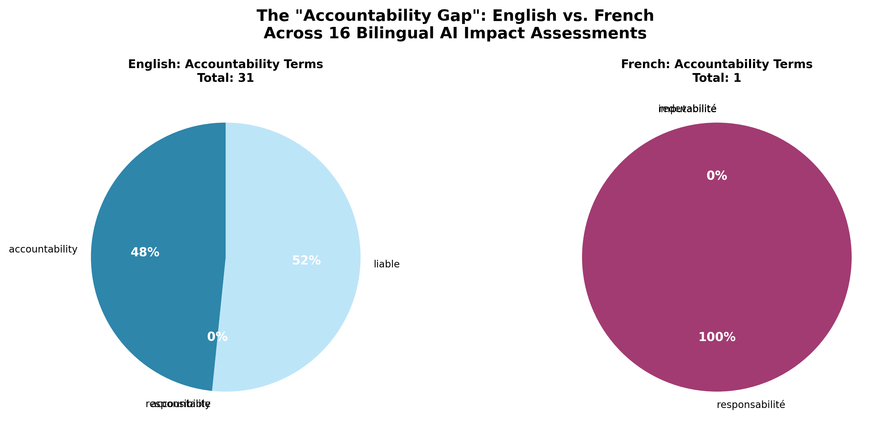

The term "accountability" appears 15 times in English AIAs but ZERO times as direct equivalent in French versions.
This is not a translation oversight. Instead, French documents employ three conceptually distinct terms:
| French Term | Frequency | Percentage | Semantic Domain | Tradition |
|---|---|---|---|---|
| reddition de comptes | 11 | 68.8% | Administrative reporting | Federal public service accountability frameworks |
| imputabilité | 4 | 25.0% | Technical attribution | Engineering/systems liability |
| responsabilité | 1 | 6.3% | Legal/moral responsibility | Quebec civil law tradition |
| TOTAL | 16 | 106.7% | Distributed concept (exceeds EN due to fragmentation) | |
accountability (15×)
Semantic Scope: Superordinate term encompassing:
Usage Pattern: Unified governance framework
Context: "Have you assigned accountability in your institution for the design, development..."
1. reddition de comptes (11×)
"Mécanisme de reddition de comptes" — Accountability as structured reporting to authorities
2. imputabilité (4×)
"Établir l'imputabilité" — Attribution of technical responsibility/traceability
3. responsabilité (1×)
"Régimes de responsabilité" — Legal frameworks for liability
Usage Pattern: Domain-specific differentiation
This is NOT a translation error. The fragmentation reflects fundamental differences in how anglophone and francophone governance traditions conceptualize accountability:
English Common Law Tradition: "Accountability" emerged as a holistic concept in Westminster parliamentary systems, encompassing all forms of answerability to authority. The term functions as a superordinate category spanning legal, administrative, and technical domains.
French Civil Law + Federal Administrative Tradition: French governance discourse maintains conceptual boundaries between:
Material Consequence: When English documents require "accountability mechanisms," French versions must specify which type of accountability — leading to divergent implementation strategies, risk assessment frameworks, and stakeholder engagement processes.
1. Policy Coherence Paradox: Official bilingualism assumes semantic equivalence, but accountability gap reveals systematic conceptual drift. How coherent can algorithmic governance be when foundational concepts fragment across languages?
2. Translation Studies: Challenges instrumentalist views of translation as meaning transfer. Shows how bilingual policy documents are sites of conceptual negotiation, not neutral conveyance.
3. Computational Text Analysis: Demonstrates value of LLM-assisted semantic matching for detecting meaning drift at scale. Traditional keyword frequency analysis would miss this fragmentation.
4. Governance Studies: Questions universalist assumptions in algorithmic accountability frameworks. Different linguistic-juridical traditions may require different governance architectures.
"While English AI Impact Assessments employ 'accountability' as a unified governance principle (15 occurrences), French versions fragment the concept across reddition de comptes (administrative reporting, 11×), imputabilité (technical attribution, 4×), and responsabilité (legal liability, 1×). This semantic drift reflects divergent juridical traditions — Quebec civil law versus common law — producing parallel accountability epistemologies within a single federal governance framework (Figure 5)."
For 10-minute CSDH talk: